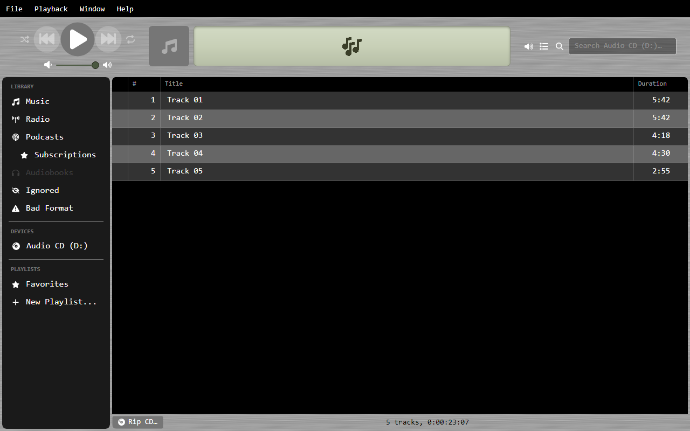
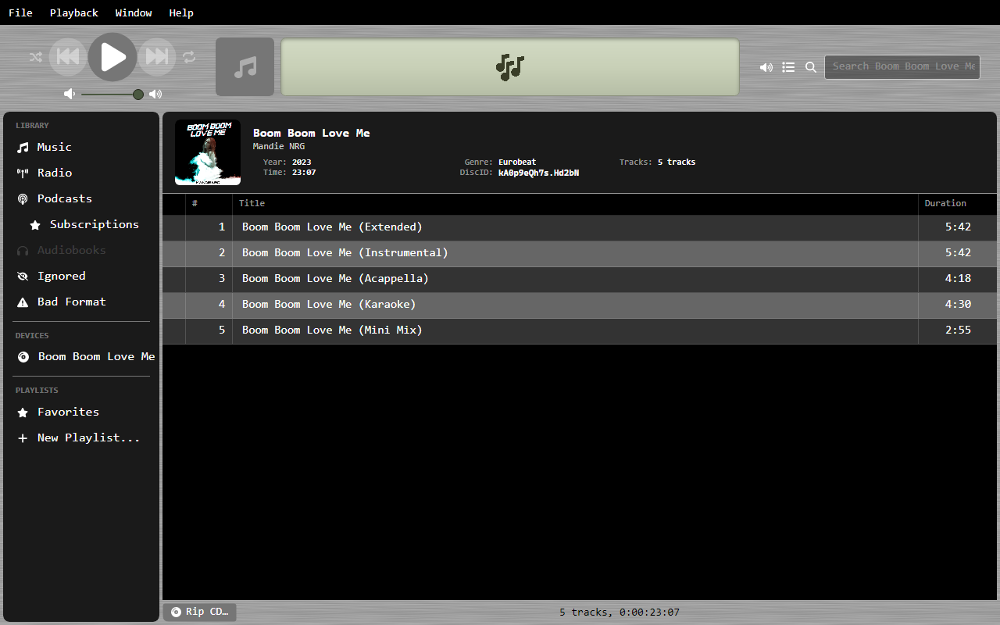
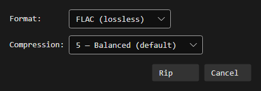
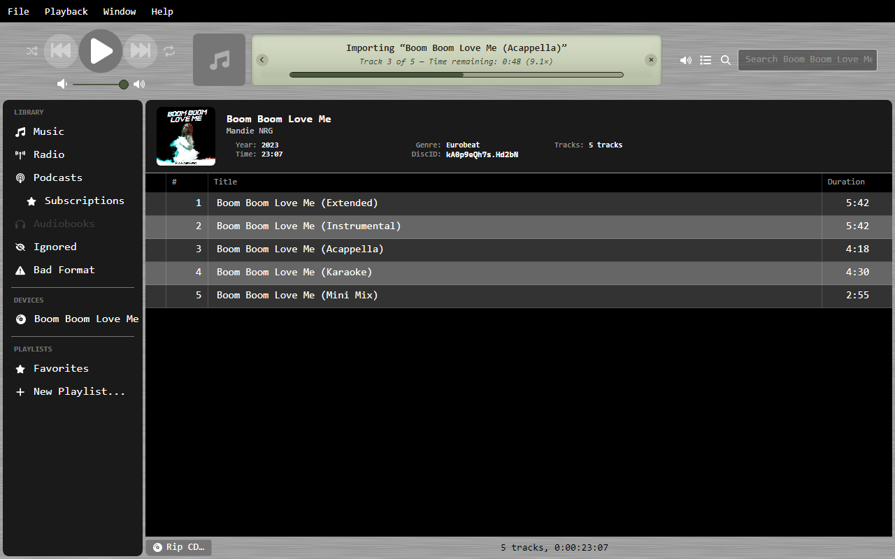

Ripping CDs¶
OrgZ rips audio CDs to WAV, FLAC, or MP3 with per-track AccurateRip verification, automatic metadata from MusicBrainz, and embedded cover art. This page walks through a full rip and explains every option.
Before you start¶
- Encoders. WAV needs nothing. FLAC and MP3 shell out to
flacandlame. OrgZ uses a system copy on yourPATHfirst and falls back to the binaries bundled with the app, so a normal install can rip FLAC/MP3 out of the box. If neither is found you'll get a message telling you how to install them. - Windows elevation. Reading raw CD audio requires administrator rights, so OrgZ launches an elevated helper and you'll see a UAC prompt each time you start a rip. macOS and Linux rip in-process — no prompt, but on Linux your user needs access to the optical device (see Installation).
1. Insert the disc¶
When you insert an audio CD, OrgZ detects it and adds it to the sidebar with all its tracks read from the disc's table of contents.

2. Metadata is fetched automatically¶
OrgZ computes the disc's MusicBrainz Disc ID from the table of contents and looks it up online. On a match it fills in the album title, artist, year, genre, and per-track titles, and pulls front cover art from the Cover Art Archive.
If the disc isn't in MusicBrainz, tracks stay as Track 01, Track 02, … — you can still rip; the files just won't be tagged. (You can edit tags afterward from the track's info dialog.)

3. Start the rip¶
- To rip the whole disc, select the CD and choose Rip CD.
- To rip one track, right-click it and choose Rip Track.
OrgZ opens the Rip Options dialog. Your last choice is remembered and used as the default next time.

Format¶
| Format | What you get |
|---|---|
| WAV | Raw 16-bit / 44.1 kHz stereo PCM — bit-identical to the CD, largest files. No embedded art (a cover.jpg is dropped beside the tracks instead). |
| FLAC | Lossless compression. Same audio as WAV, smaller files, with tags and embedded cover art. Recommended for archival. |
| MP3 | Lossy, encoded with LAME. Smallest files, with ID3 tags and embedded art. |
FLAC compression¶
Levels 0–8 (default 5, balanced). Higher levels make smaller files and take longer to encode. The decoded audio is identical at every level — only file size and encode time change.
MP3 quality¶
- VBR (variable bitrate) — LAME
-V0…-V9. V2 (~190 kbps) is the community-standard sweet spot and the default. - CBR (constant bitrate) — a fixed 64–320 kbps across the whole file. Best when something downstream needs a predictable bitrate (e.g. some streaming setups).
Paranoia¶
Sets the per-sector re-read budget before OrgZ gives up on a sector and writes best-effort data:
| Preset | Re-reads | Use for |
|---|---|---|
| Fast | 10 | Pristine discs where you want speed. |
| Standard | 40 | The default — good recovery without dragging. |
| Paranoid | 100 | Scratched or jittery discs. Slower, but recovers sectors that would otherwise become audible glitches. |
4. Watch it rip¶
Tracks rip sequentially. The status area shows the current track, a live
speed readout (e.g. 8.5×) and time remaining, and a running
verification verdict per finished track.

Each track is checked against AccurateRip as it completes:
- ✓ Track 03 — AR2
A1B2C3D4— the track ripped cleanly and its AccurateRip V2 checksum is recorded. - ⚠ Track 07 — 4 unverified sector(s) starting at LBA 123456 — some sectors exhausted the re-read budget and were written best-effort. These are the most likely source of audible clicks. Try a higher Paranoia level or clean the disc.
5. Where the files land¶
Ripped tracks are written under your library folder, organized by artist and album:
<Library>/<Artist>/<Album>/01 - <Track Title>.flac
If the disc had no metadata, the artist falls back to Unknown Artist and the
album to Audio CD. Every file is tagged with title, artist, album, genre,
track number, and year where known, plus an OrgZ <version> encoder tag. Cover
art is embedded directly (FLAC/MP3) or saved as cover.jpg next to the tracks (WAV).
The new album appears in your music library automatically once the rip finishes.
What "verified" means¶
OrgZ extracts audio using an AccurateRip pipeline with drive-offset and jitter-overlap correction. A track is reported verified when no sectors were skipped and the drive returned no read errors during extraction. The recorded AccurateRip V1/V2 checksums let you confirm a rip matches other people's clean rips of the same pressing.
Tip
A handful of jitter-corrected sectors is normal and does not make a rip unverified — those sectors were still read correctly, just realigned. Only skipped or read-error sectors mark a track as unverified.